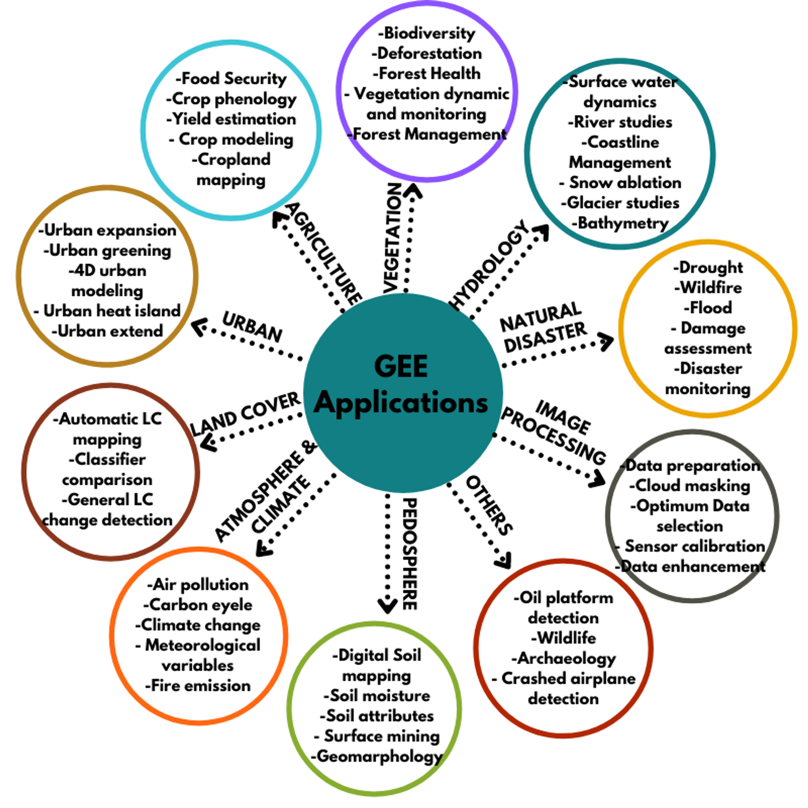

5 Week5 - Google Earth Engine
5.1 Summary
The theoretical part of the course mainly introduced the basic concepts, data structures, operations, and application cases of Google Earth Engine (GEE).
Characteristics of GEE: GEE is a geospatial processing service that utilizes cloud servers to store and analyze massive amounts of remote sensing imagery and geographic data, enabling rapid and large-scale monitoring and simulation of changes on the Earth’s surface.
Data structure of GEE: Data in GEE is divided into two types: Images and Features, corresponding to raster and vector data, respectively. Images and Features can form Collections, representing stacks of multiple images or features. Data in GEE exists in the form of objects, each with its own properties and methods.
Operations in GEE: GEE uses the JavaScript language for coding, which can be run in the browser. The code in GEE is divided into client-side and server-side, with the client-side code mainly used for interface control and interaction, and the server-side code mainly used for data processing and analysis. Data processing in GEE mainly relies on reducers, which can perform various statistical, analytical, and transformation operations on images or features. GEE also provides some advanced features such as regression, joining, and machine learning.
5.2 Application
Here’s a summary of the Google Earth Engine (GEE) applications:
Remote Sensing: GEE processes remote sensing data, useful for environmental and climate analysis.
Historical Imagery: It stores historical satellite imagery for geospatial analyses, like forest and water coverage.
Data Access: Users can access a vast database of pre-processed datasets and imagery for their own analysis1.
Real-World Applications: GEE is applied in various fields, including vegetation analysis, land cover studies, and natural disaster management.
This picture provides an overview of how GEE can be utilized in environmental science, highlighting its capabilities and benefits.

5.3 In the practical exercises section, I learned
Advanced pixel-level image transformations: How to perform Principal Component Analysis (PCA) and Tasseled Cap transformations in GEE, which are methods for dimensionality reduction and feature extraction used for image classification and change detection in remote sensing imagery.
GEE applications and data catalog: GEE can also create interactive visualization applications to showcase interesting and useful remote sensing analysis cases. GEE also provides a vast data catalog, including high-resolution satellite imagery, air pollution data, administrative boundaries, and other datasets.
5.4 Reflection
Reflecting on this week’s learning, I delved into the CASA0025: Building Spatial Applications with Big Data course, which shares similarities with our remote sensing syllabus!!! The collaboration between the two courses’ instructors is a testament to the interdisciplinary nature of these fields. It’s enlightening to see how knowledge from both domains can be integrated and enhance our understanding.
One aspect of GEE that stands out to me as particularly user-friendly, especially for engineers and scholars, is the accessibility of remote sensing data. Unlike proprietary data, GEE offers a wealth of openly available geospatial information. All that’s required is to pinpoint the specific time and location of interest and retrieve the corresponding API. This approach to data sharing is not only equitable but also fosters a spirit of community and collaboration within the field.
5.5 References
• Gorelick, N., Hancher, M., Dixon, M., Ilyushchenko, S., Thau, D., & Moore, R. (2017). Google Earth Engine: Planetary-scale geospatial analysis for everyone. Remote Sensing of Environment.
• Rafael Louzeiro – GIS/Environmental Specialist, Google Earth Engine – How it can be used in Environmental Science1, Jun 3, 2021, Integrate Sustainability Pty Ltd, https://www.integratesustainability.com.au/2021/06/03/google-earth-engine-how-it-can-be-used-in-environmental-science/
• Meisam Amani, Senior Member, IEEE, Arsalan Ghorbanian , Seyed Ali Ahmadi , Mohammad Kakooei , Armin Moghimi , S. Mohammad Mirmazloumi, Student Member, IEEE, Sayyed Hamed Alizadeh Moghaddam , Sahel Mahdavi, Masoud Ghahremanloo, Saeid Parsian, Qiusheng Wu. 2020. Google Earth Engine Cloud Computing Platform for Remote Sensing Big Data Applications: A Comprehensive Review. IEEE JOURNAL OF SELECTED TOPICS IN APPLIED EARTH OBSERVATIONS AND REMOTE SENSING, VOL. 13,.